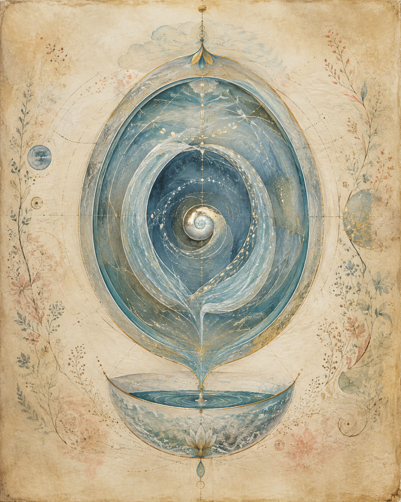
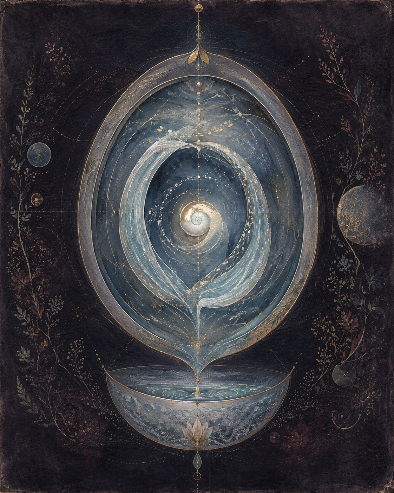

The Living Archive · Chapter III
The FirstWater
Before the word came. Before thought.The body already knew.


The first vessel
Every Human Being Began in Their Own Water
Not metaphorically.
At approximately sixteen weeks of gestation, the fetal kidneys begin producing urine, which enters the amniotic fluid. The fetus swallows the fluid, absorbs it, urinates back into it, swallows again. By full term, fetal urine has become the largest source of amniotic fluid, alongside fluid from the developing lungs and other exchange pathways — carrying growth factors, immunological signals, hormonal information, everything the developing body is learning to make. For months, in the most formative period of any human life, the body runs a closed loop: refining, cycling, sustaining itself on what it produces.
The circulatio is not a practice the body learns. It is the practice the body already ran, before it had language, before it had thought, before it had any category with which to classify what it was doing. The first environment every human being inhabits is a distillation of their own making.
And then the word arrives. And the practice becomes unthinkable.
What is welcomed · what is refused
The Inversion
Something specific happens in the contemporary wellness culture that is worth examining directly.
People will receive Kambo — the secretion scraped from the skin of the Phyllomedusa bicolor frog, a genuine toxin that causes vomiting, tachycardia, and a full-body purge — and name this a healing ordeal. They will micro-dose snake venom, bee venom, scorpion venom. They will drink Ayahuasca, eat Datura, sit with mushrooms, receive rapé blown into the nasal passage, undergo ice baths, fire walks, vision quests. Every one of these substances is external: harvested from another creature's body, collected from a plant, bought, sourced, administered. The willingness to receive all of this — the full openness to the foreign — coexists, in the same people, with a complete psychological block around the one substance that comes from their own body.
The substance that requires nothing from outside. That cannot be bought. That cannot be administered by anyone else. The substance of absolute biological sovereignty — blocked in a way that genuine toxins from other species are not.
This is not accidental. The disgust response that was installed around the body's own refined water is doing precisely what it was installed to do: it prevents the question from forming. Not is this safe? or is this useful? — those questions could be answered. What the installation prevents is the prior question: what is this?
The person who will ingest frog toxin without hesitation will not ask what their own body produces. The category was established before the question could arise. And the category is the only thing standing between them and the oldest practice the body knows.
The generative threshold
The Lingam and the Yoni
The body itself does not separate what culture has separated.
The traditions that understood the body's sacred architecture named its generative organs accordingly. The lingam — Sanskrit: sign, mark, symbol — the male generative organ as understood in Shaivite and Tantric tradition: the instrument of Shiva's creative force, the generative divine made manifest, worshipped in temple culture as the column of consciousness from which life arises. The yoni — Sanskrit: source, origin, womb — the female generative organ as the primordial matrix, the seat of Shakti, the sacred ground into which creation descends and from which it emerges. These are not euphemisms or poetic substitutions. They are the accurate names for what these organs are in their full reality — names that situate them within a cosmology rather than reducing them to function.
In men, the lingam carries both semen and urine. The seed of life and the body's refined water emerge from the same passage. No anatomical distinction. No biological wall between the generative and the refined. The same channel, the same opening — carrying what culture has placed at opposite ends of the hierarchy of value. The beginning of a life and the body's daily alchemy share the same passage. The distinction is cultural. The anatomy does not know it.
And this is the precise point at which the inversion becomes impossible to hold coherently. The lingam — whose water culture has named waste — enters the yoni of a woman, the primordial source, the sacred seat of Shakti, and this is named holy. The instrument of creation is welcomed into the seat of creation, and what it carries on the way is called contamination. The culture holds both simultaneously, names one sacred and one waste, and does not examine the incoherence — because the categories were installed before examination was possible. The lingam does not become sacred when it crosses that threshold. It was always sacred. What it carries was always the body's refined water.
In women the anatomy differs, but the deeper connection is closer still. The amniotic fluid that surrounds the developing child contains the mother's biological signature, and then, as the fetus develops its own kidney function, it becomes the child's own water returned and cycling. The womb — the yoni as living vessel — is a distillery. The child develops inside a medium that is increasingly its own making. And when birth comes, the breaking of the waters — that phrase already holds the knowledge — releases the accumulated refined water into the world. The first waters. The child's own.
Menstrual blood sits in the same suppression. The medium that was preparing to nourish a life, dismissed by the same word, the same gesture of turning away. What was being made available — the blood-rich lining, the most prepared biological environment the body can produce — named as waste alongside the fluid that would have sustained what grew there. Both ends of the cycle treated as the same thing: discharge. Disposal.
The body did not make these distinctions.The body made a cycle.The culture made the classification.
Before the category
What the Block Overrides
The disgust response is learned. This is worth sitting with.
It is learned after the body already knew its own water. The child who is taught that what the body produces is unclean receives this teaching after nine months of having lived entirely within that water — having been built by it, cell by cell, in the only environment the body had ever known. The suggestion arrives to override something prior. Something the nervous system already holds in its formation, in the architecture of what it is. The first medium of consciousness was the body's own refined water. The teaching says: forget this. Name it waste. Turn away.
And the critical faculty, not yet formed enough to evaluate what it is receiving, accepts the suggestion. Not because the suggestion is true. Because it arrives before truth has any foothold.
What shamanic traditions named, across dozens of lineages, as the veiling of original nature — the covering-over of what the being already knows at the level of its formation — operates here in the most literal possible way. The water that built the body is named as the body's contaminant. The loop that sustained the first nine months of life is classified as the thing the sewage system was made to carry away.
What the distillation practice restores is not something new. It restores a relationship the body already had. Before thought. Before language. Before any word arrived to close the question.
The intimate medium
A Fertilizer That Holdsthe Memory of Awareness
The body's water is not neutral. It carries the signature of what produced it — the dietary baseline, the hormonal state, the electrochemical charge of the body's internal environment at the moment it was made. To refine it further, to separate its fractions and return them, is to work with a medium that already knows the body it came from. A medium that holds the memory of the body's current state in the most intimate possible form.
This is what the alchemical tradition encoded in the language of the prima materia — the first matter, humble and overlooked, found everywhere, valued by almost no one. The starting material that was always in the body, always available, always the substance from which the Great Work begins. Not symbolic. Literal.
And this is what the Ayurvedic tradition held in the concept of shivambu — the auspicious water, the water of Shiva — when it named the body's own refined fluid as the substance of the practice rather than its obstacle.
The frog's secretion is not the first water. The snake's venom is not the first water. The plant is not the first water. These are all reaching outside for what has been present from the beginning of the body's existence. The first water was always the body's own.
The previous document names how the word closed the question. This document names what the word was installed to prevent: the recognition that the body was already practicing what it was taught to believe impossible.